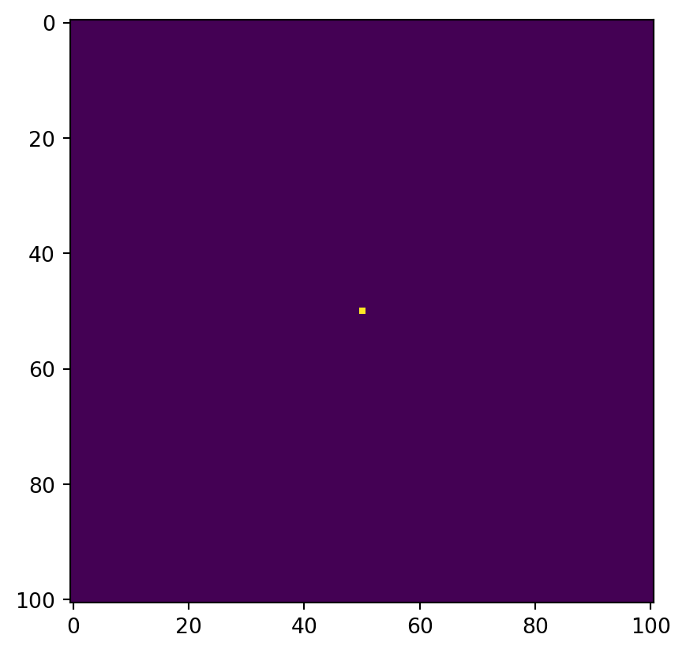
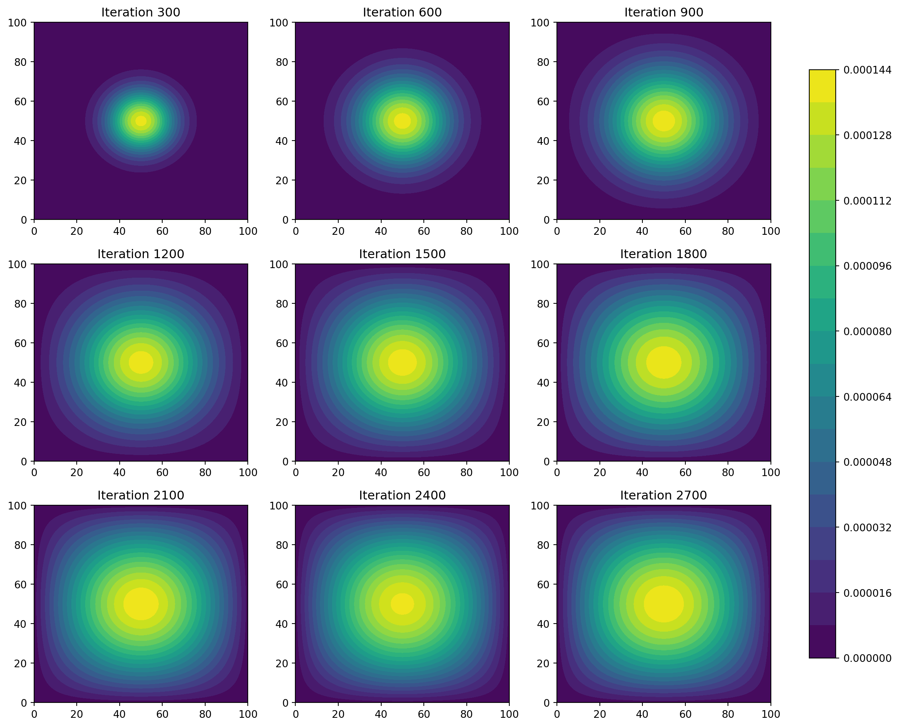

In this project, I implemented and compared different numerical methods for solving the heat diffusion equation in two dimensions. The heat equation is a fundamental partial differential equation that describes how heat distributes itself over time in a given region. I used NumPy and JAX to implement the finite difference method and visualized the results using Matplotlib. In this post, I’ll walk through the key functions, the visualization process, and the performance comparison of the methods.
The Heat Equation
The two-dimensional heat equation is given by: \[
\frac{\partial \mathrm f(\mathrm x,\mathrm y,\mathrm t)}{\partial \mathrm t}\ = \frac{\partial^{2} \mathrm f}{\partial \mathrm x^{2}} + \frac{\partial^{2} \mathrm f}{\partial \mathrm y^{2}}
\]
Using a finite difference discretization, we approximate the equation as: \[
u_{i,j}^{k+1} = u_{i,j}^{k} + \epsilon(u_{i+1,j}^{k} + u_{i-1,j}^{k} + u_{i,j+1}^{k} + u_{i,j-1}^{k} - 4u_{i,j}^{k})
\]
where \(\epsilon\) is a stability constant, and \(u_{i,j}^{k}\) represents the temperature at grid point \((i,j)\) at time step \(k\). The boundary conditions are set to zero to allow heat to escape.
Implementation and Visualization
Initial Condition
The simulation starts with a single heat source at the center of the grid:
N =101epsilon =0.2import numpy as npimport timefrom matplotlib import pyplot as pltimport numpy as npimport jaximport jax.numpy as jnpfrom jax.experimental import sparse# Construct initial condition: 1 unit of heat at midpoint.u0 = np.zeros((N, N))u0[int(N/2), int(N/2)] =1.0plt.imshow(u0)plt.show()

Matrix-Vector Multiplication Approach
get_A(): Constructing the Finite Difference Matrix
The matrix \(A\) represents the finite difference operator for the heat equation. It is a sparse matrix of size \(N^{2}\times N^{2}\), where \(N\) is the grid size. The matrix \(A\) is constructed using diagonals corresponding to the finite difference stencil.
def get_A(N):""" Takes N and returns the corresponding matrix A Args: N: scalar value Returns: A: The 2d finite difference matric, N^2 x N^2 """ n = N * N diagonals = [-4* np.ones(n), np.ones(n-1), np.ones(n-1), np.ones(n-N), np.ones(n-N)] diagonals[1][(N-1)::N] =0 diagonals[2][(N-1)::N] =0 A = np.diag(diagonals[0]) + np.diag(diagonals[1], 1) + np.diag(diagonals[2], -1) + np.diag(diagonals[3], N) + np.diag(diagonals[4], -N)return A
advance_time_matvecmul(): Advancing the Solution
The advance_time_matvecmul() function advances the solution by one timestep using matrix-vector multiplication. The grid \(u\) is flattened into a vector, multiplied by the matrix \(A\), and then reshaped back into a grid.
def advance_time_matvecmul(A, u, epsilon):""" Advances the simulation by one timestep, via matrix-vector multiplication Args: A: The 2d finite difference matrix, N^2 x N^2. u: N x N grid state at timestep k. epsilon: stability constant. Returns: N x N Grid state at timestep k+1. """ N = u.shape[0] u = u + epsilon * (A @ u.flatten()).reshape((N, N))return u
Running the Simulation
The simulation is run for 2700 iterations, and snapshots are taken every 300 iterations for visualization.
A = get_A(N)snapshots0 = []start_time = time.time()for i inrange(2701): u0 = advance_time_matvecmul(A, u0, epsilon)if i >0and i %300==0: snapshots0.append(u0.copy()) # Store intermediate results for visualizationend_time = time.time()print(f"Simulation time: {end_time - start_time:.2f} seconds")# VisualizationX, Y = np.meshgrid(range(N), range(N))fig0, axes0 = plt.subplots(3, 3, figsize=(12, 10))for i, ax inenumerate(axes0.flatten()):if i <len(snapshots0): contourf = ax.contourf(X, Y, snapshots0[i], levels=20, cmap='viridis') ax.set_title(f'Iteration {(i+1) *300}')fig0.tight_layout(rect=[0, 0, 0.9, 1])cbar_ax = fig0.add_axes([0.92, 0.1, 0.03, 0.8])fig0.colorbar(contourf, cax=cbar_ax)plt.show()
Simulation time: 86.88 seconds
This method is straightforward but computationally expensive due to the large size of \(A\). Running the simulation for 2700 iterations took about 49.14 seconds.
Sparse Matrix Approach with JAX
get_sparse_A(): Constructing the Sparse Matrix
To improve performance, we use a sparse matrix representation of \(A\). The get_sparse_A() function constructs the matrix \(A\) in JAX’s sparse BCOO format.
def get_sparse_A(N):""" A function which returns matrix A in a sparse format given N Args: N: scalar value Returns: A_sp_matrix: matrix A in a sparse format """# Use previously defined function to define A A = get_A(N)# Convert to JAX sparse BCOO format A_sp_matrix = sparse.BCOO.fromdense(jnp.array(A))return A_sp_matrix
Running the Simulation
The simulation is run for 2700 iterations, and snapshots are taken every 300 iterations for visualization.
u1 = jnp.zeros((N, N))u1 = u1.at[int(N/2), int(N/2)].set(1.0) # JAX-compatible way to set valuesA = get_sparse_A(N)snapshots1 = []start_time = time.time()for i inrange(2701): u1 = advance_time_matvecmul(A, u1, epsilon)if i >0and i %300==0: snapshots1.append(u1.copy()) # Store intermediate results for visualizationend_time = time.time()print(f"Simulation time: {end_time - start_time:.2f} seconds")# VisualizationX, Y = np.meshgrid(range(N), range(N))fig1, axes1 = plt.subplots(3, 3, figsize=(12, 10))for i, ax inenumerate(axes1.flatten()):if i <len(snapshots1): contourf = ax.contourf(X, Y, snapshots1[i], levels=20, cmap='viridis') ax.set_title(f'Iteration {(i+1) *300}')fig1.tight_layout(rect=[0, 0, 0.9, 1])cbar_ax = fig1.add_axes([0.92, 0.1, 0.03, 0.8])fig1.colorbar(contourf, cax=cbar_ax)plt.show()
Simulation time: 12.09 seconds
Using the sparse matrix significantly reduces memory usage and computation time. Running the simulation for 2700 iterations took about 6.38 seconds. The results are identical to the dense matrix approach but computed much faster.
Direct Operation with NumPy
advance_time_numpy(): Advancing the Solution
The advance_time_numpy() function advances the solution using direct array operations with np.roll(). This avoids the need for matrix-vector multiplication and is more efficient.
def advance_time_numpy(u, epsilon):""" Advances solution by one timestep by using np.roll Args: u: N x N grid state at timestep k (NumPy array). epsilon: Stability constant. Returns: Updated N x N grid state at timestep k+1 (NumPy array). """# Pad the grid with zeros to handle boundary conditions u_padded = np.pad(u, pad_width=1, mode='constant', constant_values=0)# Compute the Laplacian using finite differences laplacian = ( u_padded[2:, 1:-1] +# u_{i+1,j} u_padded[:-2, 1:-1] +# u_{i-1,j} u_padded[1:-1, 2:] +# u_{i,j+1} u_padded[1:-1, :-2] -# u_{i,j-1}4* u )# Update the heat distribution u_new = u + epsilon * laplacianreturn u_new
Running the Simulation
The simulation is run for 2700 iterations, and snapshots are taken every 300 iterations for visualization.
u2 = np.zeros((N, N))u2[N//2, N//2] =1.0# Set heat source at the centersnapshots2 = []start_time = time.time()for i inrange(2701): u2 = advance_time_numpy(u2, epsilon)if i >0and i %300==0: # Store every 300 iterations snapshots2.append(u2.copy())end_time = time.time()print(f"NumPy Direct Execution Time: {end_time - start_time:.2f} seconds")# VisualizationX, Y = np.meshgrid(range(N), range(N))fig2, axes2 = plt.subplots(3, 3, figsize=(12, 10))for i, ax inenumerate(axes2.flatten()):if i <len(snapshots2): contourf = ax.contourf(X, Y, snapshots2[i], levels=20, cmap='viridis') ax.set_title(f'Iteration {(i+1) *300}')fig2.tight_layout(rect=[0, 0, 0.9, 1])cbar_ax = fig2.add_axes([0.92, 0.1, 0.03, 0.8])fig2.colorbar(contourf, cax=cbar_ax)plt.show()
NumPy Direct Execution Time: 0.38 seconds
This method is faster than the matrix-vector multiplication approach. Running the simulation for 2700 iterations took about 0.18 seconds. The results are consistent with the previous methods.
JAX Implementation
advance_time_jax(): Advancing the Solution
The advance_time_jax() function uses JAX’s just-in-time (JIT) compilation to accelerate the computation. It follows the same logic as the NumPy implementation but leverages JAX’s performance optimizations.
@jax.jitdef advance_time_jax(u, epsilon):"""Using just-in-time (jit) compilitation to advance solution by one timestep Args: u: N x N grid state at time k epsilon: Stability constant Returns: u_new: Updated N x N grid state at timestep k+1 """# Pad the grid with zeros to handle boundary conditions u_padded = jnp.pad(u, pad_width=1, mode='constant', constant_values=0)# Compute the Laplacian using finite differences laplacian = ( u_padded[2:, 1:-1] +# u_{i+1,j} u_padded[:-2, 1:-1] +# u_{i-1,j} u_padded[1:-1, 2:] +# u_{i,j+1} u_padded[1:-1, :-2] -# u_{i,j-1}4* u )# Update the heat distribution u_new = u + epsilon * laplacianreturn u_new
Running the Simulation
The simulation is run for 2700 iterations, and snapshots are taken every 300 iterations for visualization.
u3 = jnp.zeros((N, N))u3 = u3.at[N//2, N//2].set(1.0) # JAX-compatible way to modify array# JAX Warm-up (first run triggers compilation)u3 = advance_time_jax(u3, epsilon)snapshots3 = []start_time = time.time()for i inrange(2701): u3 = advance_time_jax(u3, epsilon)if i >0and i %300==0: # Store every 300 iterations snapshots3.append(np.array(u3)) # Convert to NumPy for plottingend_time = time.time()print(f"JAX JIT Execution Time: {end_time - start_time:.2f} seconds")# VisualizationX, Y = np.meshgrid(range(N), range(N))fig3, axes3 = plt.subplots(3, 3, figsize=(12, 10))for i, ax inenumerate(axes3.flatten()):if i <len(snapshots3): contourf = ax.contourf(X, Y, snapshots3[i], levels=20, cmap='viridis') ax.set_title(f'Iteration {(i+1) *300}')fig3.tight_layout(rect=[0, 0, 0.9, 1])cbar_ax = fig3.add_axes([0.92, 0.1, 0.03, 0.8])fig3.colorbar(contourf, cax=cbar_ax)plt.show()
JAX JIT Execution Time: 0.05 seconds

This method is the fastest, thanks to JAX’s JIT compilation. Running the simulation for 2700 iterations took about 0.03 seconds. The results are consistent with the other methods.
Comparison of Methods
Method
Execution Time
Ease of Implementation
Matrix-Vector Multiplication
49.14 seconds
Moderate
Sparse Matrix (JAX)
6.38 seconds
Moderate
Direct Operation (NumPy)
0.18 seconds
Easy
JAX with JIT
0.03 seconds
Easy
Overall, the fastest method is JAX with JIT compilation, while the easiest to implement is the Direct operation with NumPy.
Conclusion
This project demonstrated how to solve the heat equation using finite difference methods and visualize the results. By comparing the NumPy and JAX implementations, I observed that JAX’s JIT compilation significantly improves performance. The visualization clearly shows the heat spreading outward in a circular pattern, as expected.
Note: Execution times used were from personal JupyterLab document, so they may not match specific execution times seen on myblog.